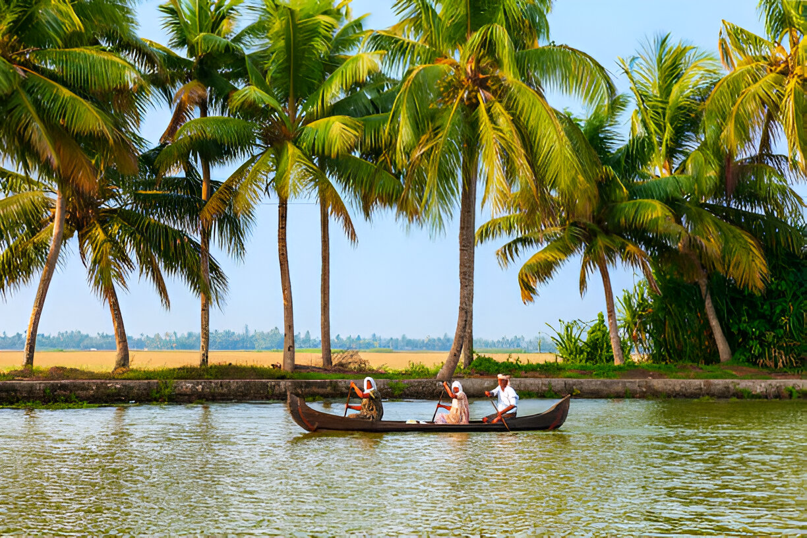

About Kerala(God’s Own Country)
Kerala is famous for its lush green landscapes, serene backwaters, hill stations, and Ayurvedic therapies. It is a top destination for nature lovers and honeymooners.
Popular Spots
- Alleppey Backwaters
- Munnar
- Kochi